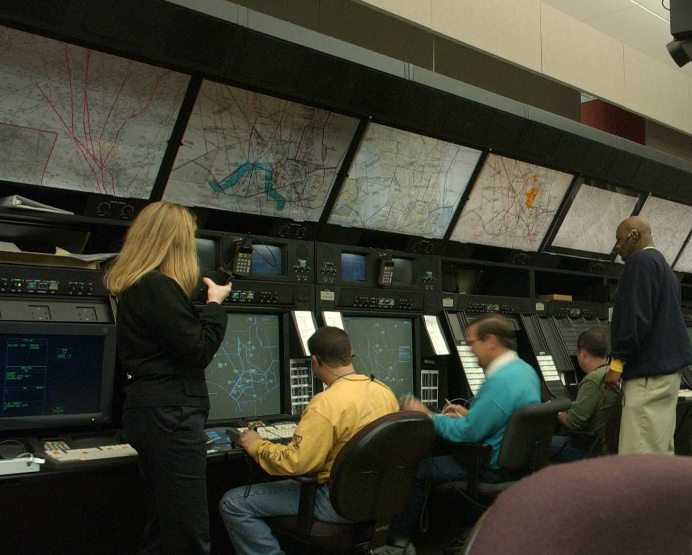

Officials Say an L3Harris Router Swap Flooded the FAA Network and Grounded U.S. Flights
A router replaced at one remote site during a copper-to-fiber upgrade flooded the network for 45 minutes and reached 17 facilities, officials said. The FAA faulted the same contractor’s oversight of backups after a Dallas outage last year.
Nov. 14, 2026, 2:45 p.m. ET: Officials named the cause: a router being replaced by an L3Harris contractor during a copper-to-fiber upgrade at a remote FAA site flooded the network and reached 17 facilities. Whether the router was faulty or installed wrong is still under investigation.
Correction: An earlier version of this story, citing CBS News sources, said an update to the network set off the outage. Officials say the trigger was a router being replaced during a line upgrade.
Nov. 13, 2026, 9:30 p.m. ET: Unleashed.news has filed two Freedom of Information Act requests with the FAA for the records of the outage. Read the addendum ↓
Nov. 13, 2026, 7:20 p.m. ET: Added CNN’s report that the FAA told airlines the outage began with network routers.

A router being replaced by an L3Harris contractor at a remote Federal Aviation Administration site flooded the agency’s network with traffic and set off the failures that halted every departing flight in the United States on Friday, Nov. 13, Transportation Secretary Sean Duffy said Saturday, citing a preliminary investigation, CBS News reported. The contractor was switching telecommunication lines from old copper wire to fiber, Duffy said. Officials have not determined whether the router was faulty or was installed wrong.
The router then began flooding other routers and overloading the system, with 1,000 attempts to log on every four to five seconds, Duffy said. After it had flooded the system for 45 minutes, the FAA still could not determine the cause, and the instability then spread to 17 facilities, Bedford said, according to CBS. None of the en route centers “actually went dark,” FAA Administrator Bryan Bedford said, but controllers reported frequencies going in and out. “When we saw it go to two, three, 10, 17 facilities, that’s when we started to realize there was something much larger going on here,” Bedford said at a news conference at the Department of Transportation, CNN reported. “And since we couldn’t explain it quickly, that’s when we went to the national ground stop.”
The log-on attempts overwhelmed one set of routers at an en route facility, Bedford said, “which then went to the backups at other en route facilities, and it propagated from there.” He added, “There is no backup to the backup” when communication between routers is severed.
Who is at fault is still open. “What did L3Harris do? Did they make mistakes yesterday?” Duffy told reporters. “They own this network. They’re our prime contractor. I can’t go somewhere else. They own it. Or was it a faulty router? And we’re going to find that out. And frankly, we’re going to hold people accountable.” Senior government sources told CBS on Friday that the issue was isolated to specific hardware: Cisco 600 series routers made between 2001 and 2006. L3Harris said it is “supporting the FAA in its investigation to understand the conditions that led to the Nov. 13 ground stop” and has completed more than 70% of the planned conversion from legacy copper wires, Fox Business reported.
Bedford said there was zero evidence of anything nefarious or anything related to artificial intelligence. He expected 4,000 to 5,000 of Saturday’s 41,000 scheduled flights to be canceled, but said airlines should be fully back on schedule by the end of the day Sunday. “That will set us up for a full recovery tomorrow,” he said. About 9,159 flights were canceled on Friday, according to FlightAware, CBS reported.
Saturday’s account confirms most of what was reported Friday night and corrects one part of it. CBS News’s sources had placed the trigger on the L3Harris-operated network, and an airline source told CNN the FAA blamed network routers. Both held up. But the trigger was not an update to the network, as CBS’s sources described it and as this story first reported. It was a router being replaced during a line upgrade.
The order on Friday came with little warning. The FAA’s Air Traffic Control System Command Center grounded departures “due to extraordinary circumstances and for reasons of safety,” CBS News reported. Duffy announced the stop on X at 4:16 p.m. ET and said technicians were investigating, NBC News reported. The problem reached the 22 regional centers that direct planes between airports, The Associated Press reported.
The scale was immediate. About 3,100 aircraft were in the air bound for U.S. airports when the stop began, CBS reported. The flight-data firm Cirium counted 11,000 flights scheduled to leave U.S. airports after 4 p.m. and about 600 diversions, CNBC reported. It was only the second nationwide ground stop since the Sept. 11, 2001, attacks, the AP noted; the first, in January 2023, followed the failure of a key FAA computer system.
On Friday, officials named no cause beyond the outage itself. “There has been a temporary telecommunications outage,” the FAA said on X, adding that “every flight has been accounted for,” according to NBC News. Homeland Security Secretary Markwayne Mullin said “there was no indication, as of yet, that this was a nefarious act against us.” Air Space Intelligence, the FAA vendor behind the new SMART traffic-management system, said the stop was not based on or a result of its software, NBC reported.
The first accounts of a cause came Friday night. An update to “the private communications network that connects America’s air traffic control system” caused the system to reboot, “leading to a crash and a communications outage, multiple sources told CBS News.” The FAA told airlines the outages “were the result of a problem with network routers,” according to an airline source, and the problem “is believed to have started at Chicago Midway International Airport and cascaded nationwide,” CNN reported. None of the reports of Saturday’s news conference reviewed by Unleashed.news named the remote site.
L3Harris’s best-known contract with the agency is the FAA Telecommunications Infrastructure, or FTI. By the company’s own description, FTI “securely connects more than 4,400 facilities, manages more than 29,000 services” and “supports the safe operation of 45,000 daily flights across the National Airspace System.” The company says it maintains “99.99971% network reliability.”
This is not the first time the FAA has pointed at L3Harris. After multiple failures of a Frontier data line led to an outage at the FAA’s radar approach control facility in Dallas on Sept. 19, 2025, the agency said, “Oversight by L3Harris, an FAA contractor, failed to ensure that redundancies in the system functioned properly,” NBC News reported. The FAA called that outage a “clear example of the FAA’s outdated infrastructure” that “underscores the urgent need to modernize our air traffic control systems,” CBS News Texas reported.
It happened again in the Northeast this September. On Sunday, Sept. 20, L3Harris “advised they wanted to switch to the backup” so it could troubleshoot a circuit at a Philadelphia air traffic control facility, the FAA said. The next day a New Jersey Transit contractor “accidentally cut the backup fiber line near New Brunswick,” and about 9,500 U.S. flights were delayed or canceled, Reuters reported. “When it fails, we just don’t have the redundancy that we would get if we had a modern architecture,” Bedford said then.
Friday’s failure was different in kind. In Dallas and in the Northeast, the trouble began with damaged lines at single facilities and backups that did not hold. This time, by the officials’ account, one router at one remote site flooded the network, and the fault moved through the backups at other en route centers to reach 17 facilities. A second cable cannot protect against that.
By 6:50 p.m. ET Friday, the FAA’s national airport status feed no longer listed a nationwide ground stop. Around 6 p.m., the FAA had said flights would be allowed to depart as en route facilities recovered, CNBC reported. Senior lawmakers had not been briefed by early evening, according to a GOP leadership aide and a lawmaker, NBC News reported.
This story was updated at 7:20 p.m. ET on Nov. 13 with CNN’s report that the FAA told airlines the outage began with network routers; at 9:30 p.m. ET with an addendum on the records Unleashed.news has requested from the FAA; and at 2:45 p.m. ET on Nov. 14 with the officials’ account of the cause, correcting this story’s earlier description of the trigger as a network update.
What Unleashed.news has asked the FAA to release
On the night of Nov. 13, Unleashed.news filed two Freedom of Information Act requests with the Federal Aviation Administration, submitted through The Ticktin Law Group of Deerfield Beach, Fla., on behalf of this publication.
The first, to FAA headquarters, asks for the records of the network itself: every trouble ticket opened on the FAA Telecommunications Infrastructure on Nov. 13, the root-cause and after-action reports L3Harris owes the agency under its contract, every configuration change and software or firmware upgrade approved for the network from Nov. 11 to 13, and the FAA’s outage logs for all 22 en route centers. It also seeks the agency’s correspondence with L3Harris and the carriers, the briefings prepared for Secretary Duffy, the White House and Congress, any record naming the circuits or equipment that failed, and any assessment of a cyber intrusion.
The second, to the FAA’s Air Traffic Records office, asks for the Command Center’s side of the day: its advisories for Nov. 13 and 14, the traffic management logs for the Command Center and every en route center, recordings of its calls with airlines, any reports of aircraft that could not be contacted or of losses of separation during the outage, and the timeline prepared for FAA leadership.
Because the trouble tickets and root-cause reports sit on L3Harris systems, both requests explain why they are agency records under the law and ask the FAA to obtain anything held only by the contractor rather than withhold it.
We asked for expedited processing and a public-interest fee waiver. The FAA must decide on expedited processing within 10 days, and its legal deadline to respond is 20 working days, about Dec. 14, 2026. We will publish every record we receive, in full.
Saturday’s account points straight at records the first request already seeks: the maintenance and equipment changes approved for the network that week, the trouble tickets opened that day, any record naming the equipment that failed, and the root-cause report L3Harris owes the FAA.
The point
What we found: officials have now confirmed the network and the contractor, and corrected the mechanism. Friday night, CBS News’s sources tied the outage to the private network L3Harris runs for the FAA, and an airline source told CNN the FAA blamed network routers. On Saturday, Duffy said an L3Harris contractor replacing a router at a remote site during a copper-to-fiber upgrade set off a flood of traffic that reached 17 facilities; whether the router was faulty or installed wrong is still open. The record shows a pattern. Twice in the 14 months before Friday, failures on links L3Harris oversees came down to backups that did not hold: in Dallas in 2025, the FAA faulted the company’s oversight of redundancies, and in September a switch L3Harris requested left a Philadelphia facility on a single line that a contractor then cut. Friday went further. By Bedford’s account, the fault reached other en route centers through their backups, so the backups carried the failure instead of containing it. That reading is ours, from Bedford’s description, and the FAA’s root-cause findings will test it.
Why it matters
By its operator’s own count, 45,000 flights a day depend on this network, and on Friday one router at one remote site stopped every departure in the country. Whether the router was defective or installed wrong decides what has to change: the hardware still in the field, how L3Harris swaps equipment on a live network, or how far one fault can travel before the system contains it. Travelers, airlines and Congress are owed the FAA’s root-cause findings in full.
The questions
- Was the router faulty, or was it installed wrong, and when will the FAA publish its root-cause findings?
- How did one router at a remote site flood the network for 45 minutes before the FAA could find it, and why did the backups at other en route centers spread the fault instead of containing it?
- Which remote site was it, and did the trouble begin at Chicago Midway, as an airline source told CNN on Friday?
- How many FAA sites still run on copper, and what will change in how L3Harris swaps equipment on a live network?
- What did the FAA require of L3Harris after it faulted the company’s oversight of backups in Dallas in 2025?
Sources
- FAA National Airspace System status feed Federal Aviation Administration
- FAA Telecommunications Infrastructure (FTI) L3Harris Technologies
- FAA issues nationwide ground stop due to “extraordinary circumstances” CBS News
- FAA grounds departing flights nationwide, citing air traffic communication system outage CNBC
- FAA grounds all flights at U.S. airports due to air traffic control communications problems The Associated Press (PBS News)
- Live updates: FAA grounds flights nationwide because of communication issue NBC News
- Travelers stranded and thousands of flights canceled after FAA ground stop. Here’s what we know CBS News
- US flight ground stop latest: Duffy says either faulty router or contractor error likely caused airspace meltdown CNN
- Sean Duffy says L3Harris work may have caused FAA nationwide ground stop Fox Business
- Live updates on FAA ground stop CNN
- Operations at Dallas airports fully restored after telecommunications outage NBC News
- Outdated infrastructure is to blame for hours-long ground stop at Dallas airports, FAA says CBS News Texas
- US FAA says error messages in telecommunications circuit prompted shift to backup on Sunday Reuters (via WHBL)